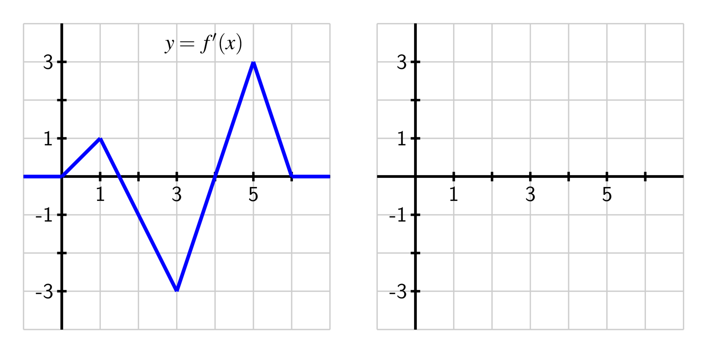

Suppose that the following information is known about a function \(f\text{:}\) the graph of its derivative, \(y = f'(x)\text{,}\) is given in the figure below. Further, assume that \(f'\) is piecewise linear (as pictured) and that for \(x \le 0\) and \(x \ge 6\text{,}\) \(f'(x) = 0\text{.}\) Finally, it is given that \(f(0) = 1\text{.}\)

a. On what interval(s) is \(f\) an increasing or decreasing function? (Separate multiple intervals with a U for union.)
\(f\) increasing on \(f\) decreasing on
b. On what interval(s) is \(f\) concave up or down? (Separate multiple intervals with a U for union.)
\(f\) concave up on \(f\) concave down on
c. At what point(s) does \(f\) have a relative minimum or maximum? (Separate multiple points with a comma.)
minimum(s) at \(x=\) maximum(s) at \(x=\)
d. Recall that the Total Change Theorem tells us that
\begin{equation*}
f(1) - f(0) = \int_0^1 f'(x) \, dx.
\end{equation*}
What is the exact value of \(f(1)\text{?}\)
e. Use the given information and similar reasoning to that in (d) to determine the exact value of \(f(2)\text{,}\) \(f(3)\text{,}\) \(f(4)\text{,}\) \(f(5)\text{,}\) and \(f(6)\text{.}\)
\(f(2)=\) , \(f(3)=\) \(f(4)=\) \(f(5)=\) and \(f(6)=\)
Based on your responses to all of the preceding questions, which of the following is an accurate graph of
\(y=f(x)\text{?}\)